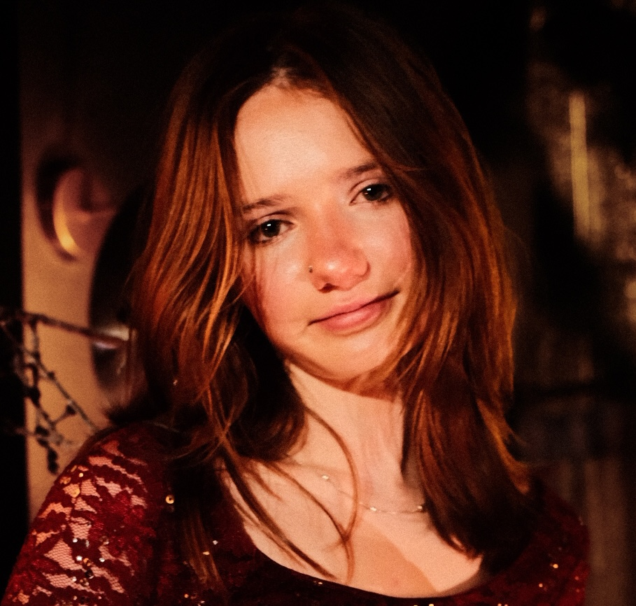

Hello! My name is Elspeth Stevenson and I am a Graphic Designer. I grew up in Park City, UT and am now going to VCU in Richmond, VA. I enjoy painting and drawing in my free time, as well as anything crafty. I enjoy the outdoors and love to go on walks around the city. My skills include: Adobe software, css, html, javascript, photography. I have experience working for Susan Swartz Studios, an art gallery in Park City and am currently the Art Director for Park City Summer Day Camp.